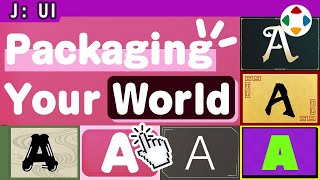
速览
即使是相同的游戏性、相同的内容，单凭 UI 和字体的用法，就能改变目标人群。例如表示相同功能的选项画面：做得酷，看起来大人也能玩；也可以演出可爱系；或像恐怖片；明亮华丽的感觉；像电脑世界；和风、西洋风、中华风、亚洲风……与设计角色和背景相比，单纯换字体就能连接到世界观的构成，那就轻松了——不过有时也会从零开始做整套字体，所以也难说很轻松。实际上不只是字体，背景、窗框、图标等也要成套考虑；即便如此，塑造世界氛围的效果绝大，所以应该在维持易读的同时积极设计。字体和 UI 都是构建那个世界的东西——不，更近于为世界打包吧。不只是字体，其颜色和装饰也很重要。现在整体给人偏爱简洁的时代印象，但也要关注字体。
1. 同一内容，不同人群 0:03
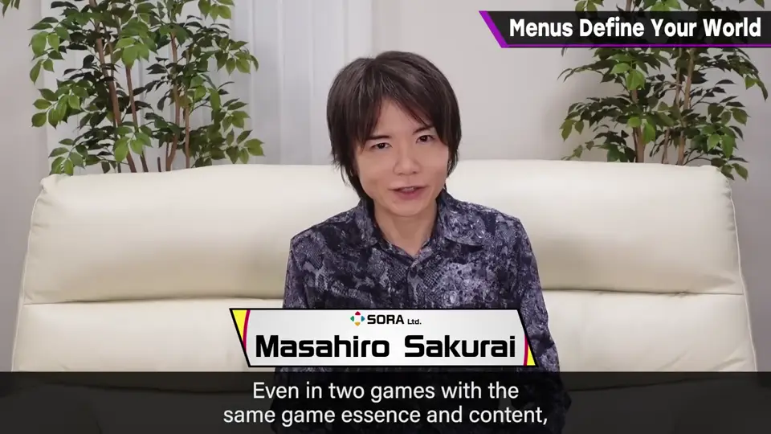
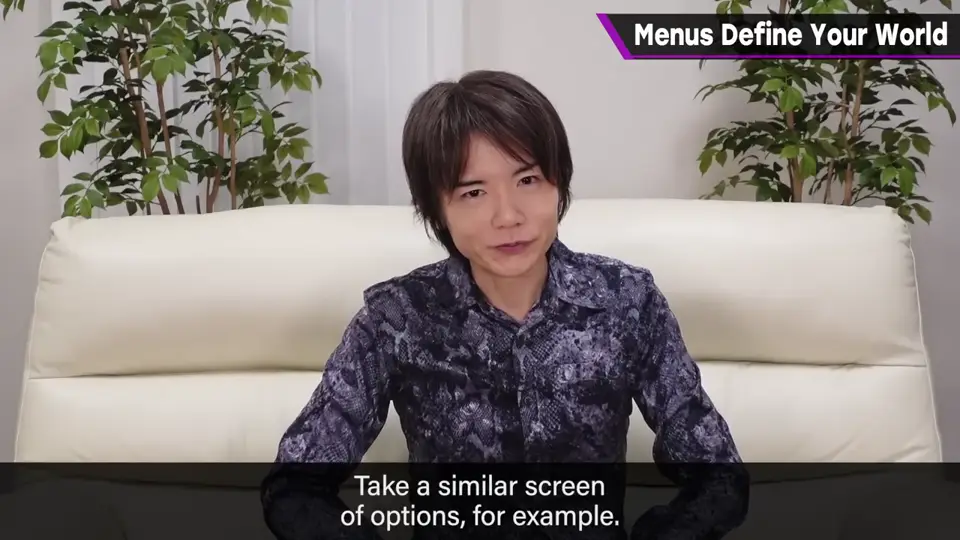
例如表示相同功能的选项画面：
2. 各种风格 0:22
| 风格 | 给人的印象 |
|---|---|
| 酷 | 大人也能玩 |
| 可爱系 | 亲切、轻松 |
| 恐怖 | 恐怖片氛围 |
| 明亮华丽 | 热闹 |
| 电脑世界 | 数字、科技 |
| 和风 / 西洋 / 中华 / 亚洲 | 地域文化 |
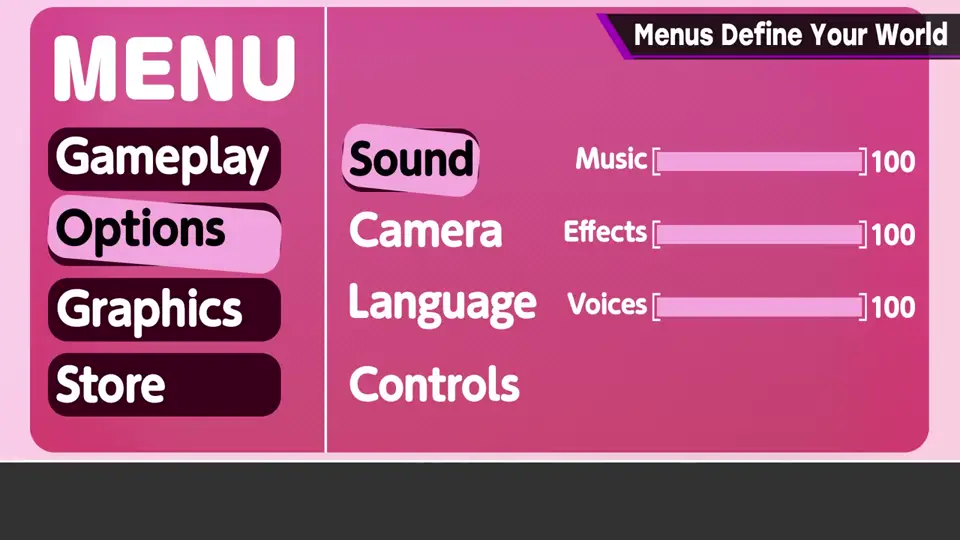
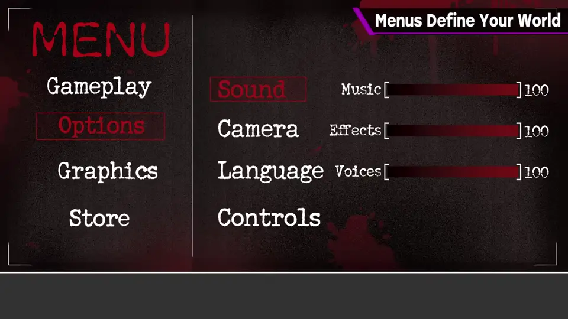
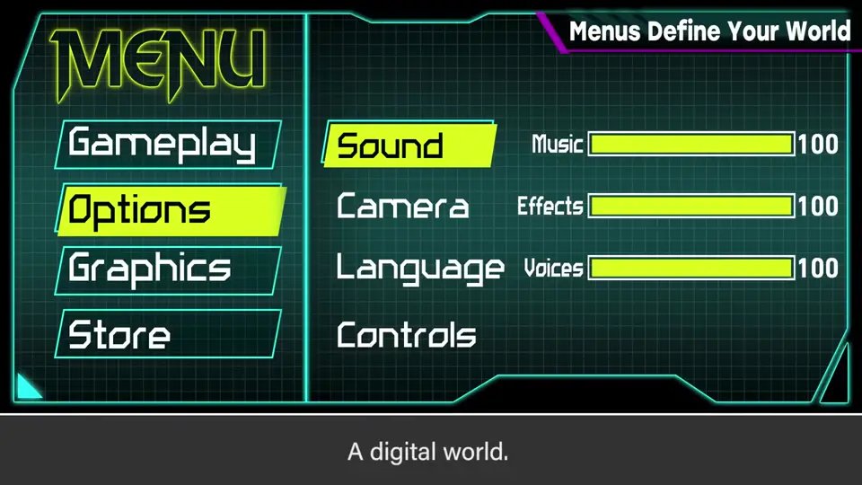
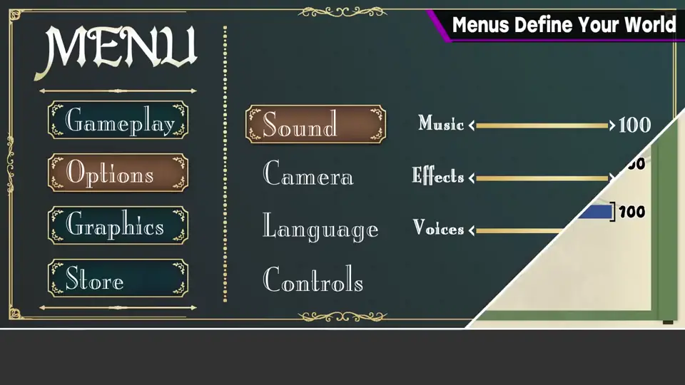
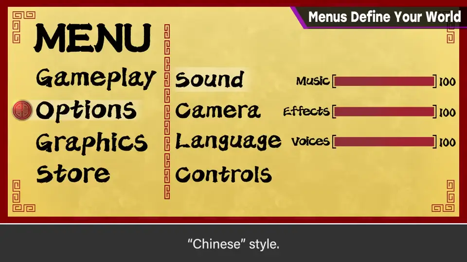
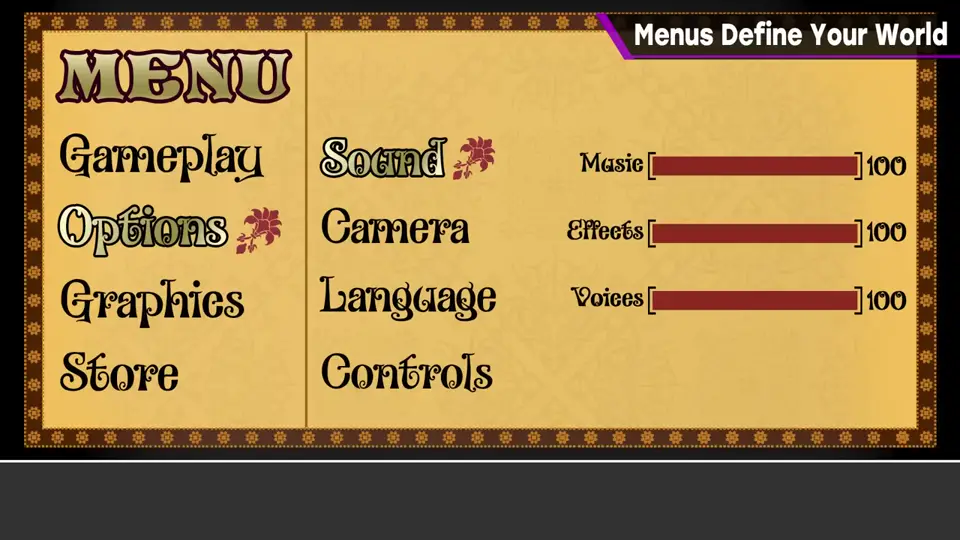
3. 只换字体的效果 0:53
与设计角色和背景相比，单纯换字体就能连接到世界观的构成，那就轻松了。
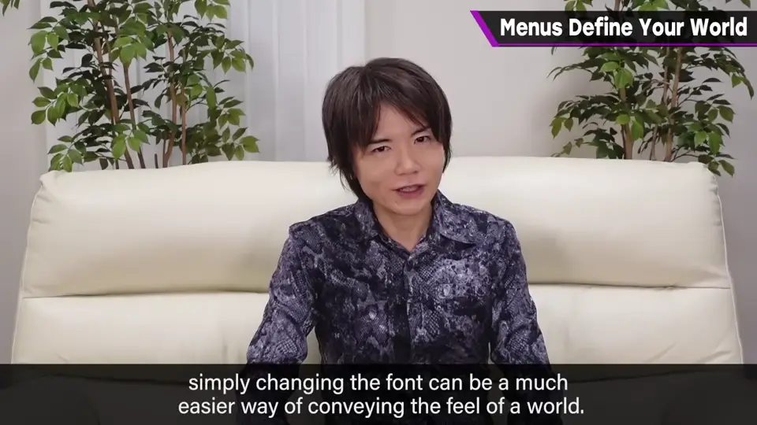
不过有时也会从零开始做整套字体，所以也难说很轻松。
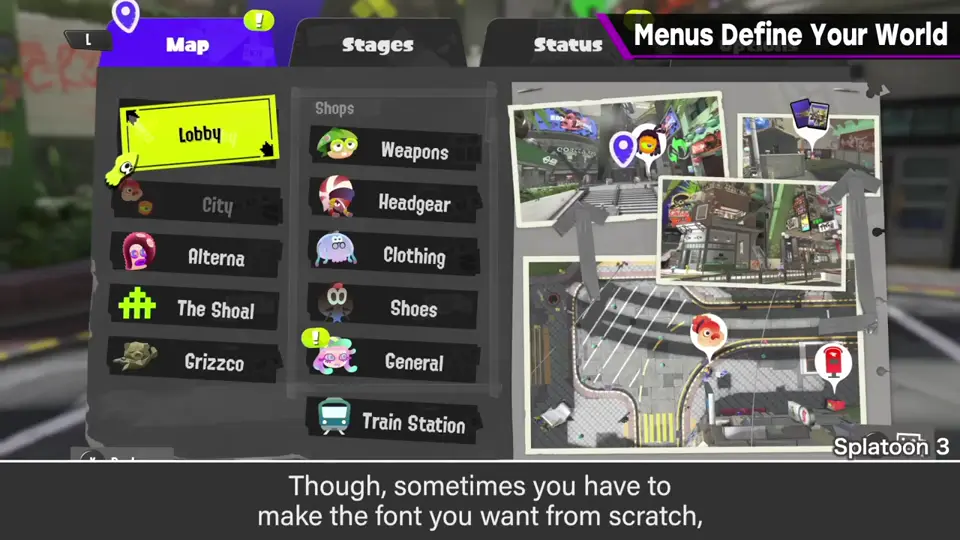
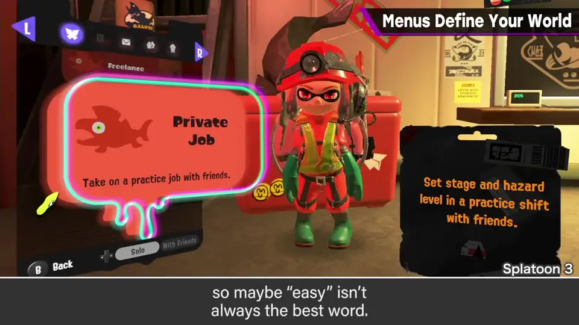
4. 成套设计 1:10
实际上不只是字体，背景、窗框、图标等也要成套考虑。
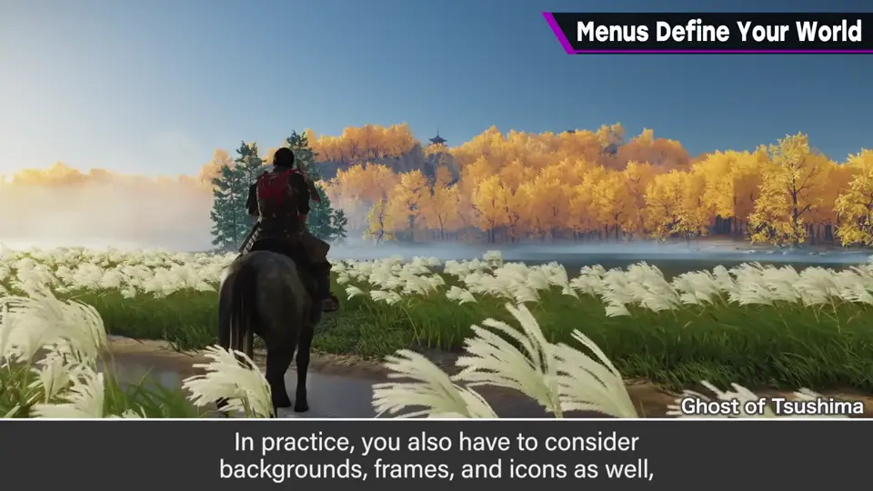
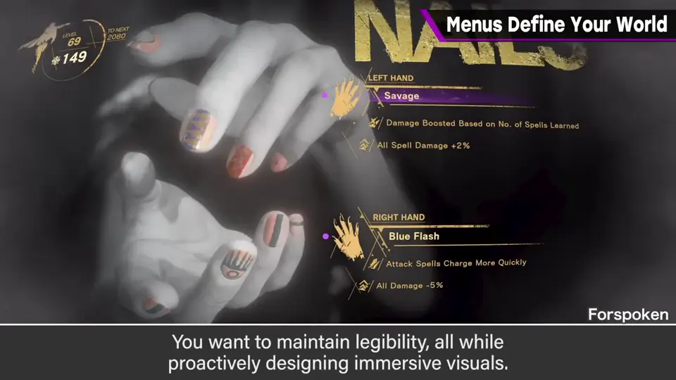
5. 为世界打包 1:25
字体和 UI 都是构建那个世界的东西——不，更近于为世界打包吧。
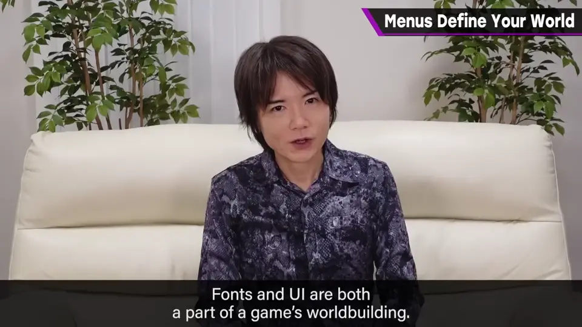
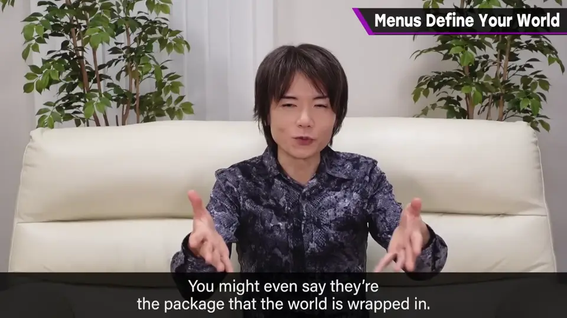
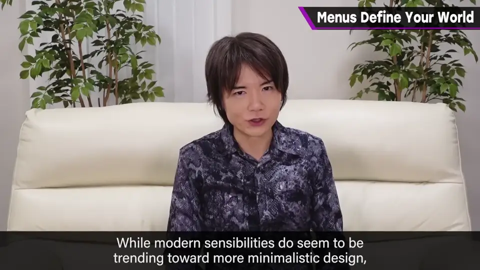
不只是字体，其颜色和装饰也很重要。现在整体给人偏爱简洁的时代印象，但也要关注字体。
自测题
1. 改变 UI 与字体能带来什么？
即使游戏性和内容相同，也能改变目标人群与世界观印象。 0:10
2. 为什么说换字体「轻松」未必恰当？
有时要从零做整套字体，还需配合背景、框、图标。 1:10
3. 「为世界打包」是什么意思？
字体和 UI 包裹着游戏世界，决定玩家对世界的第一印象。 1:35